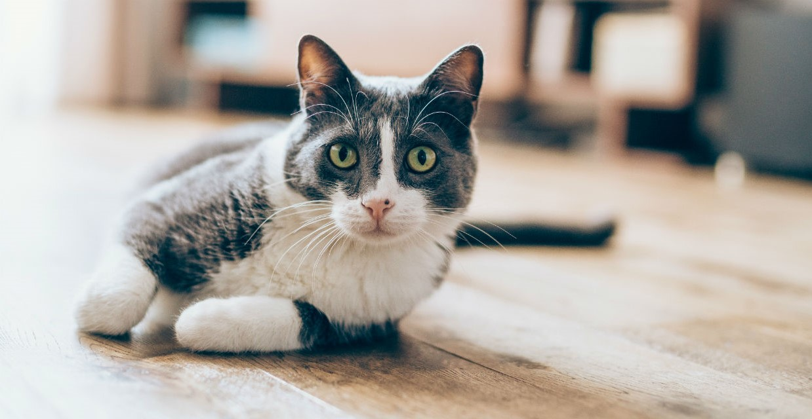

We all know how important food is for a healthy pet. There are many commercial brands offering different types and flavours of cat food. But in my personal experience and opinion, they can cause damage to our cat's life span.
Keeping this in mind I have put forward a list of recipes for our beloved canines. These are easy to make and can be made at the comfort of our home.